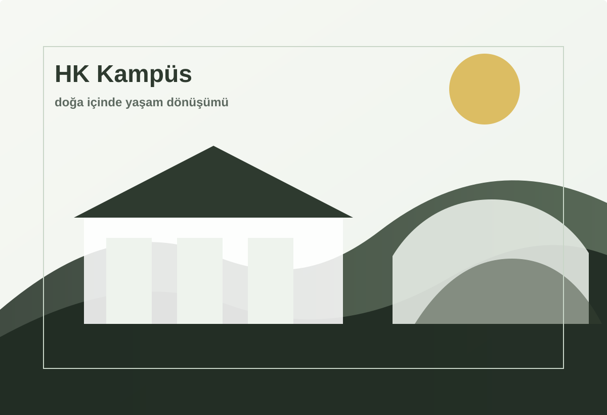

لا. يتم تقييم البنية حسب الاستشارة والهدف والحالة الصحية ومدة الإقامة ومستوى الحركة.
مركز تغيير نمط الحياة
الأسئلة
أسئلة شائعة حول مدة البرنامج والغرف والملاءمة والتكلفة والنتائج.

HK
الأسئلة الشائعة
يمكن مناقشة 7 أو 14 أو 21 أو 30 يوما. المدة المناسبة تختلف حسب الشخص.
نعم، يتم تقييم مستوى البداية في الاستشارة وتخطيط الشدة وفقا لذلك.
تتم مراجعة الحالات الصحية الخاصة في الاستشارة وبعد الحصول على المعلومات اللازمة.
يشمل الحركة والتغذية والراحة والأنشطة الاجتماعية، وقد يختلف حسب الشخص والموسم.
توجد أنواع مختلفة من الغرف. تتم مشاركة التوفر والتفاصيل في الاستشارة.
تتوفر معلومات متعددة اللغات، ويتم توضيح النقل والسكن والتفاصيل في الاستشارة.
يعتمد السعر على مدة الإقامة ونوع الغرفة والتاريخ وبنية البرنامج، ويشارك في الاستشارة.
يراجع فريقنا معلوماتك ويتصل بك لشرح المسار المناسب.
لا. تختلف النتائج حسب التاريخ الصحي ومدة الإقامة والالتزام والعادات اليومية.
HK
تعرف على مدة البرنامج المناسبة لك
أكمل التقييم الأولي القصير. سيزودك فريقنا بالمعلومات حسب هدفك وحالتك الحالية والتاريخ المخطط.